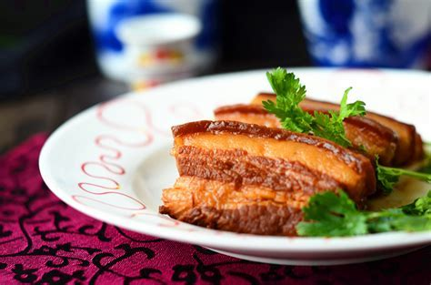
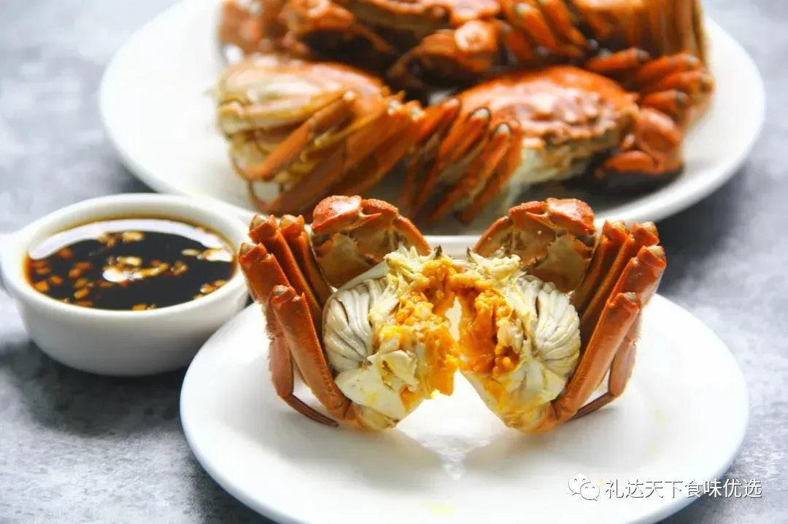
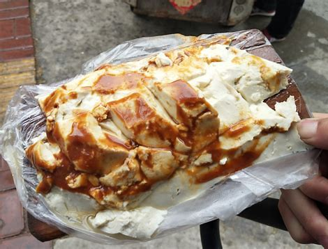

|
文化资讯
文化艺术
文化美食
精品线路
生态保护
国家文旅
票务信息
游客攻略
黄河流域美食
Previous
Next

济南美食
•
把子肉
•
九转大肠
•
甜沫
•
孟家扒蹄
•
油旋
•
济南酥锅
•
商河老豆腐
•
奶汤蒲菜
更多
菏泽美食
•
谢集罐子汤
•
东明香肚
•
郓城壮馍
•
水煎包
•
单县羊肉汤
•
芝麻糖
•
皮家烧鸡
•
烤全羊
更多

东营美食
•
黄河口大闸蟹
•
孤岛鲜鱼汤
•
利津水煎包
•
史口王牌烧鸡
•
广饶肴驴肉
•
机厂月饼
•
黄河口刀鱼
更多

济宁美食
•
甏肉干饭
•
济宁糁汤
•
济宁糊粥
•
济宁热豆腐
•
邹城川味面条
•
曲阜粥泡羊肉
•
金乡红三刀
•
泗水火烧
更多
黄河文化旅游宣传平台
联系电话: 17753010787
版权所有：山东大学技术团队
技术支持：山东大学技术团队